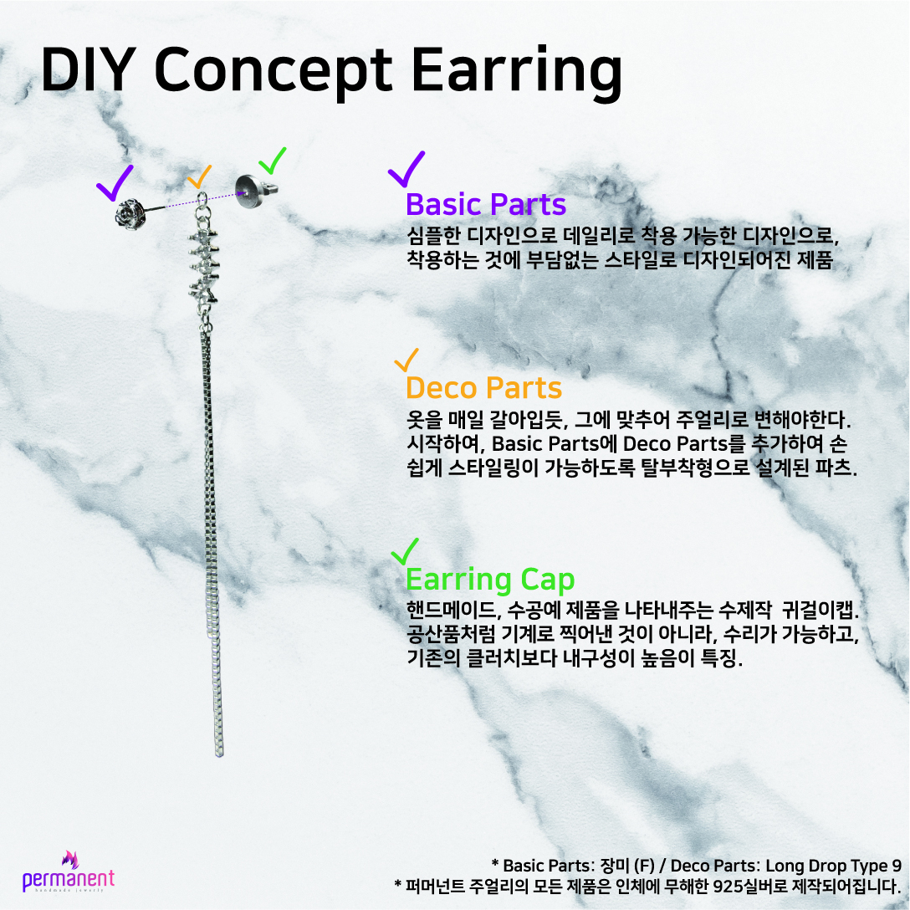

- handmade Jewerly
- Objrct type
- Drop type
- Long drop type
퍼머넌트 주얼리의 주얼리에 대한 진심
퍼머넌트 주얼리는 직접 디자인, 직접 세공, 직접 판매까지 모든 것을 직접하는 회사입니다.
그 누구보다 정직하려 애쓰는 퍼머넌트 주얼리의 행보를 지켜봐주세요!
퍼머넌트 주얼리의 컨셉

퍼머넌트 주얼리의 제품은 DIY 컨셉을 가지고 있습니다.
DIY 컨셉으로 변화가 필요할 때 주얼리의 변화를 언제든지 줄 수 있다는 것이 퍼머넌트 주얼리의 특징입니다.
오늘의 계획이 있고, 오늘의 스타일링 포인트가 있습니다. 이는 TPO라고도 불리죠. TPO에 맞추어 주얼리의 변화를 언제든지 줄 수 있는 것이 퍼머넌트 주얼리의 컨셉입니다.
퍼머넌트 주얼리의 제품이 궁금하시다면 이글을 클릭해주세요.